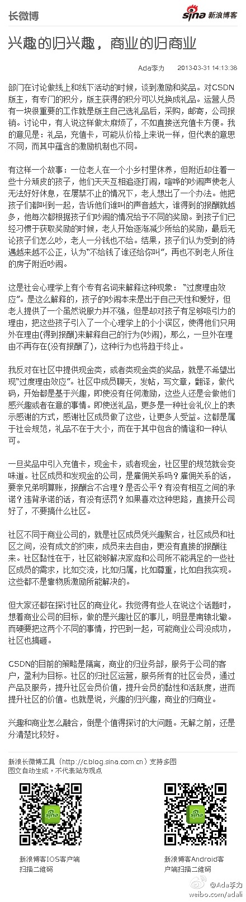

Java@CSDN:发现好多程序员还都在奋战，大家来玩个互粉的游戏吧！转发、评论本条微博，内容写上自己擅长的开发语言种类、数据库种类等。然后跟你楼上、楼下的互粉，以后大家还可以相互交流学习！4月8日抽出五名参与者，赠送程序员杂志 四月刊一本！
兴趣的归兴趣，商业的归商业：部门在讨论做线上和线下活动的时候，谈到激励和奖品。对CSDN版主，有专门的积分，版主获得的积分可以兑换成礼品。运营人员有一块很重要的工作就是版主自己选礼品后... 网页链接 （使用新浪长微博工具发布 网页链接） 